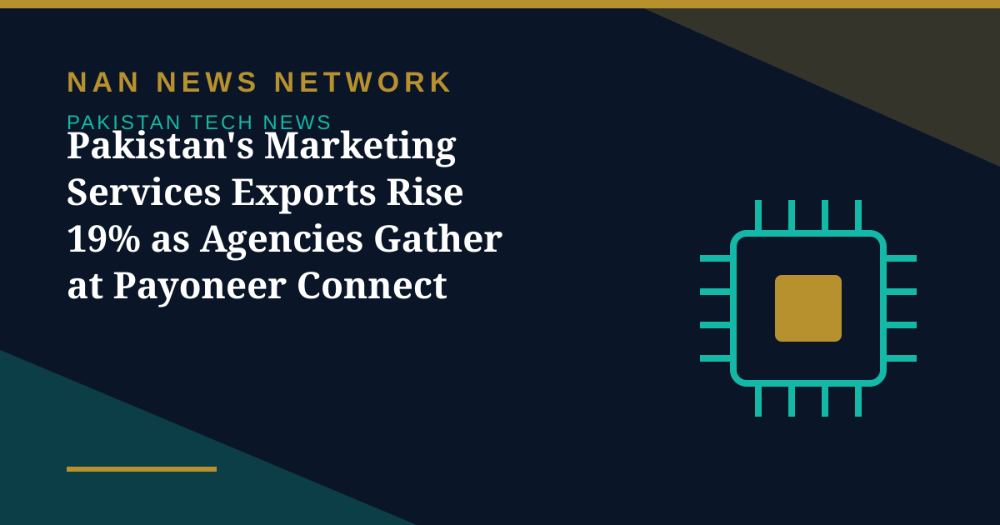

Pakistan's Marketing Services Exports Rise 19% as Agencies Gather at Payoneer Connect Lahore

Pakistan's exports of advertising and market research services rose 19 percent year-on-year to $30.7 million in July-September 2026, up from $25.8 million in the same quarter last year, State Bank of Pakistan data shows, setting the backdrop for Payoneer Connect Lahore, where more than 40 marketing agencies met to explore how to win clients abroad and scale with them.
The Export Era of Global Marketing
Hosted by Payoneer, the global financial technology company that helps businesses grow across borders, the event was themed 'The Export Era of Global Marketing'. It brought agency leaders together with representatives of the Pakistan Software Houses Association (P@SHA), Google, along with AI practitioners. The services export momentum extends across professional services: other business services, from the wider State Bank category that also covers public relations, consulting and technical services, recorded exports of $620 million in the same quarter, up 27 percent year-on-year.
AI and the end of hourly billing
That emphasis on quality over volume also ran through a fireside chat on agentic AI with Ali Imran Memon, founder and CEO of Kitsune AI. The conversation examined whether Pakistan has reached the limits of freelancing and outsourcing, and how agencies can turn their expertise into AI agents and products rather than billable hours. It also weighed whether AI services should be priced by subscription, task or outcome. Google's Customer Solutions team showed how localisation using AI tools can greatly expand cross-border business opportunities for Pakistani companies.
The policy push
Sustaining this growth will also depend on policy. P@SHA Vice Chairman Samad Saleem outlined the policy and advocacy work under way to enable and scale Pakistan's digital services exports, as the government pursues its target of $15 billion in IT exports by 2030. The Lahore gathering showed an industry shifting from selling hours to selling outcomes — and the export figures suggest the shift is already paying off.
Sources: NewsUpdateTimes, November 6, 2026
More on Pakistan Tech News
- PTA Expands Network Quality Surveys to Lahore and Karachi After Twin Cities Checks
- Jazz Tops PTA Network Quality Survey in Islamabad and Rawalpindi
- Pakistan and Russia Explore Joint Technology Projects in AI, Cybersecurity and Quantum Computing
- Pakistan's 5G User Base Reaches 1.8 Million Across 24 Cities — but Lawmakers Question Service Quality
- Pakistan Weighs Arbitration Over $800 Million in Unpaid PTCL Privatisation Dues
- Pakistan Mobile Phone Production Falls 20% in September, but Local Assembly Still Meets 96% of Demand
- Pakistan's First Biomass Energy Plant Becomes Operational in Sajawal, Sindh
- AI Demand Lifts Global Trade Outlook to 3.9% — and Opens a Door for Pakistan
- MUET Students Win Accessibility Award at Alibaba Cloud AI Hackathon Pakistan 2026
- 1.5 Million Pakistani Children Faced Online Sexual Exploitation in a Year, UNICEF-Backed Study Finds
- Pakistan, OIC and D-8 Explore New Science, Technology and Research Cooperation
- Pakistan's Cyber Emergency Team Warns of Spyware That Can Infect Phones Through Online Ads
- Pakistan Climbs to 95th in Global Innovation Index 2026, Regaining 'Overperformer' Status
- Pakistan Launches New E-Passport With Chip, NFC and Biometric Security
- Pakistan Targets 50% Local Value Addition in Mobile Phone Manufacturing
- PTA Fines Mobile and Internet Firms Over Rs3.41 Billion Over Consumer Complaints
- PTA Warns of Rising 5G Security Risks as Cyber Alerts Top 10,000
- Pakistan Internet May Slow Until November 2 as AAE-1 Cable Undergoes Repairs
- PM Sets November Deadline for Alibaba-Backed AI and Digitalisation Projects
- Pakistan's 5G Now Reaches 24 Cities After $509 Million Spectrum Auction
- Pakistan Announces Urdu AI Model 'Buraq' to Keep National Data at Home
- PM Launches Two-Year Drive to Give 500,000 Chromebooks to Talented Students
- Pakistan to Host UN Space Technology Conference on Early Warnings and Climate Action
- PAK-US Tech Connect 2026 Takes 16 Pakistani Tech Firms Across America
- Pakistan Wins 11 Awards at the ASOCIO Digital and AI Awards 2026
- Pakistan Showcases AI Innovations at Abu Dhabi's AI Everything Global 2026